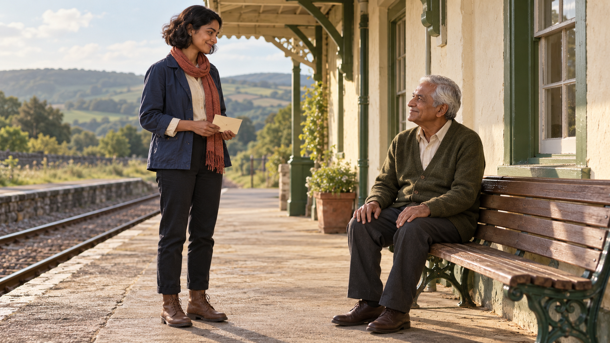
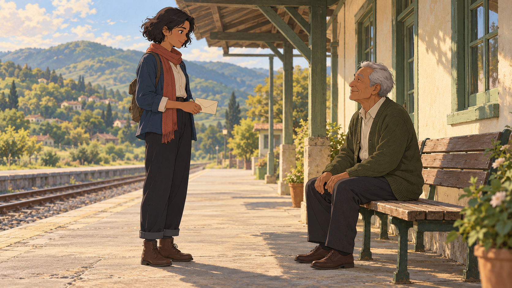
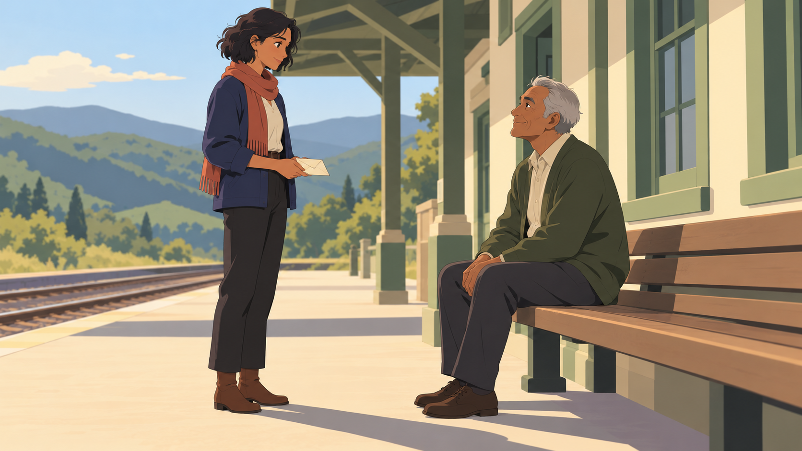
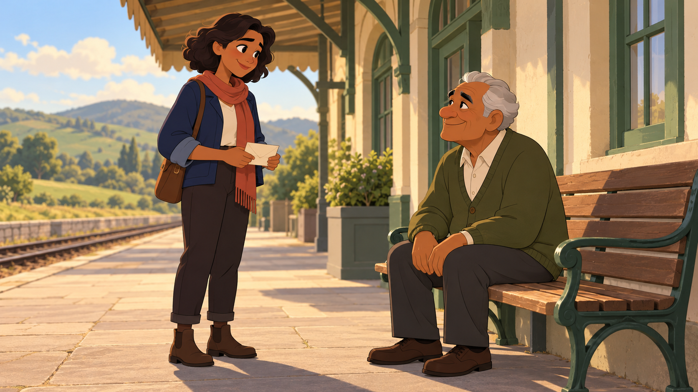
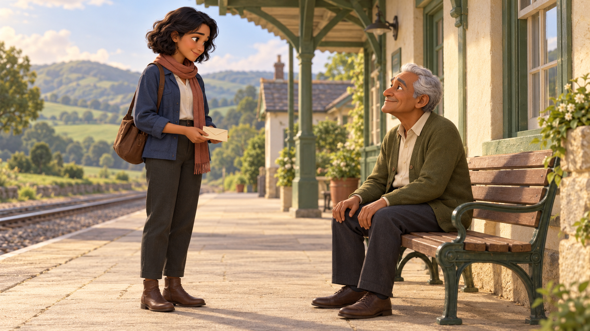
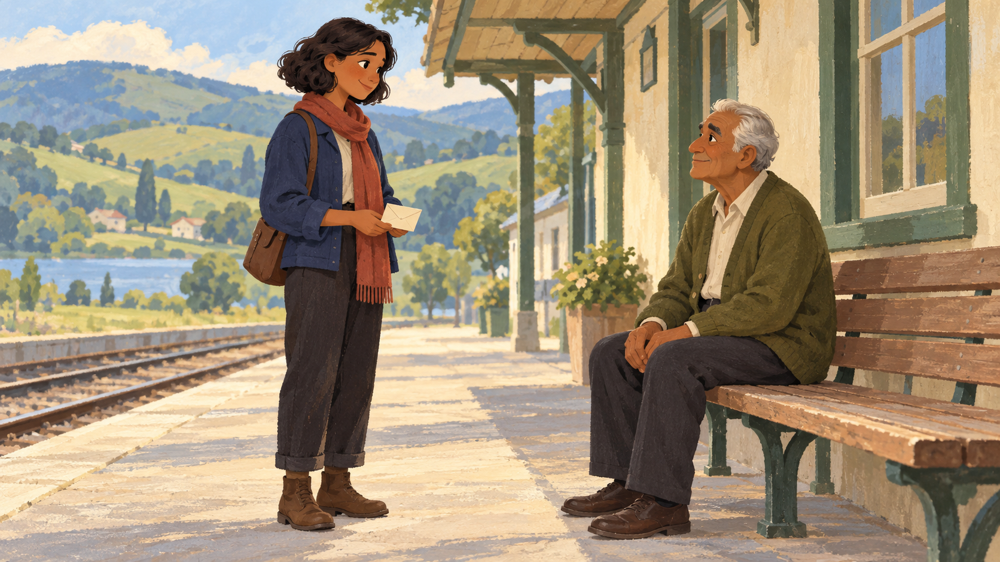
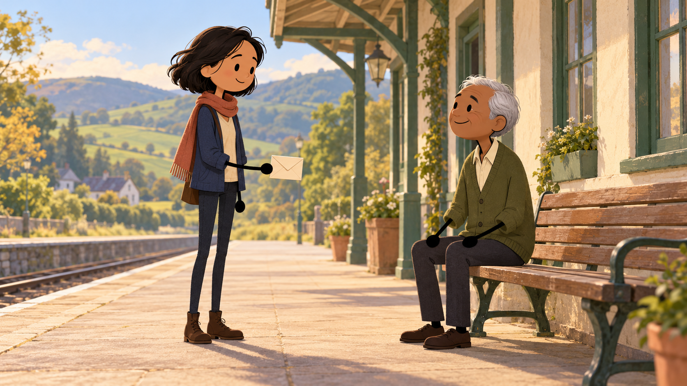
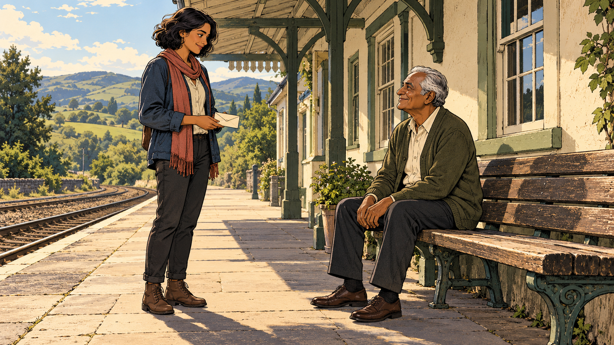

Realistic Cinema
Natural faces, believable materials and restrained live-action light.
Useful for: Drama · mystery · grounded adventure
Clear characters. Thoughtful light. A quieter, more focused set of visual treatments.
Choose the drawing or rendering style. Your story gets its own people, setting, mood and color palette.

Natural faces, believable materials and restrained live-action light.

Fine drawn characters, layered shading and richly painted settings.

Clean anime contours, broad color areas and graphic cel shadows.

Expressive rounded cartoon designs in a cohesive animation world.

Sculpted characters, tactile materials and soft bounced illumination.

Visible gouache brushwork and simplified illustrated shapes.

Simple faces and black line arms with clothed bodies in a richly detailed storybook world.

Confident ink contours, expressive adult faces and strong graphic shadow shapes.